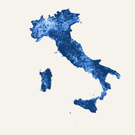

Comune che vaiComune che vai, numero che trovi. ← Tutti i video
02 · Altitudine dei comuni
Da dove vengono i numeri
- Indicatore
- Quota del municipio (m s.l.m.)
- Fonte
- ISTAT, Altimetria dei comuni al 31 dicembre 2021 (pubblicata il 15 aprile 2026) e popolazione residente al 1° gennaio 2026 (stima)
- Anno dei dati
- quote 2026 (confini al 31/12/2021); popolazione al 1° gennaio 2026
- Come è calcolato
- Per ogni comune la quota del municipio calcolata da ISTAT: altitudine del centroide della sezione di censimento 2021 in cui si trova il municipio, sul modello digitale del terreno NASADEM. «Metà degli italiani vive sotto i 110 m» è la mediana delle quote pesata per gli abitanti; il «comune tipico» (287 m) è la mediana semplice dei 7.890 comuni con quota. Le quote di abitanti hanno al denominatore tutti i 58.942.828 residenti; i 27.358 residenti dei 6 comuni senza quota non sono contati in nessuna fascia (nessun numero arrotondato del video cambia escludendoli). La quota del territorio sotto i 110 m è calcolata sulle superfici dei comuni al 31/12/2021 dello stesso file.
- Classifiche
- Nessuna soglia di abitanti: la quota del municipio non dipende da quante persone ci vivono, quindi i record (Sestriere, Jolanda di Savoia) sono tra tutti i comuni.
- Limiti
- È la quota del municipio, non delle case: frazioni e abitazioni possono stare molto più in alto o più in basso. Le quote vengono dal modello del terreno e possono differire di qualche metro da quelle dei cartelli (Milano risulta 138 m). Sei comuni nati da fusioni dopo il 2021 (Moransengo-Tonengo, Bardello con Malgesso e Bregano, Uggiate con Ronago, Sovizzo, Setteville, Santa Caterina d'Este) non hanno una quota nel file ISTAT e restano senza dato. Confini dei comuni al 31/12/2021. Una mappa per comuni non pesa le persone: i comuni grandi e poco abitati occupano più spazio.
- Valori per comune
- Sì: per ogni comune c'è il valore esatto e la fascia di colore della mappa.
La mappa
Gli stessi colori del video. Tocca un comune per vedere il suo valore; ingrandisci con due dita sul telefono, con Ctrl + rotellina o con i pulsanti sul computer.
- meno di 110 m s.l.m.
- da 110 a meno di 300 m s.l.m.
- da 300 a meno di 600 m s.l.m.
- da 600 a meno di 1.000 m s.l.m.
- 1.000 m s.l.m. e oltre
- dato non disponibile
Tutti i comuni
7.896 comuni con i codici ISTAT 2026, 6 senza dato. In evidenza quelli citati nel video. Tocca il nome di una colonna per ordinare; tocca un comune per vederlo sulla mappa.
Numeri del video
Ogni numero mostrato o detto nel video.
| Cosa | Comune | Valore | Nota |
|---|---|---|---|
| Quota sotto cui vive metà degli italiani | 110 m | Mediana della quota del municipio pesata per gli abitanti al 1/1/2026 | |
| Comuni con il municipio sotto i 110 m | 24 % | 1.925 comuni su 7.896 (24,4%), a voce «uno su quattro» | |
| Territorio dei comuni con il municipio sotto i 110 m | 24 % | 23,8% della superficie (comuni al 31/12/2021), a voce «meno di un quarto» | |
| Abitanti dei comuni con il municipio sotto i 110 m | 50 % | 49,9% dei residenti, a voce «metà» | |
| L'italiano di mezzo: comune a quota simile | Vigevano (PV) | 108 m | |
| L'italiano di mezzo: comune a quota simile | Guidonia Montecelio (RM) | 107 m | |
| L'italiano di mezzo: comune a quota simile | Portici (NA) | 112 m | |
| Grande città | Roma (RM) | 43 m | a voce «poco sopra i quaranta metri» |
| Grande città | Napoli (NA) | 42 m | a voce «poco sopra i quaranta metri» |
| Capoluogo più alto | Enna (EN) | 928 m | più in alto del 99,1% degli italiani |
| Secondo capoluogo più alto | Potenza (PZ) | 827 m | più in alto del 98,5% degli italiani (a voce e a schermo «98 su 100») |
| Il comune tipico | 287 m | Mediana semplice della quota del municipio dei 7.890 comuni con quota | |
| Italiani più in basso del comune tipico | 79 % | 78,9% dei residenti vive in comuni sotto i 287 m («quasi otto su dieci») | |
| Italiani più in alto del comune tipico | 21 % | 21,0% dei residenti vive in comuni sopra i 287 m | |
| Comune più alto (quota del municipio) | Sestriere (TO) | 2.032 m | Record tra tutti i comuni, senza soglia di abitanti |
| Comune più basso (quota del municipio) | Jolanda di Savoia (FE) | -3 m | Record tra tutti i comuni, senza soglia di abitanti |